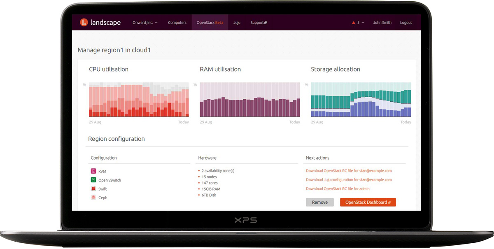

Ubuntu 16.04 LTS is here
Ubuntu is an open source software platform that runs from the cloud, to the smartphone, to all your things
Buy a managed cloud ›
Get BootStack, a fully managed private OpenStack cloud with our experts responsible for design, deployment and availability.

For all your things ›
Snappy Ubuntu Core delivers bullet-proof security, reliable updates and the enormous Ubuntu ecosystem to a wide range of internet things, connected devices and autonomous machines.
The legal cloud of the future ›
Read how Opus 2’s flagship service was built entirely on Ubuntu OpenStack.
OpenStack Summit Austin ›
Meet us in Austin from 25 to 28 April for demos of our latest solutions, talks, competitions and more.